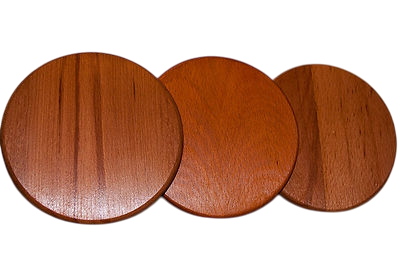
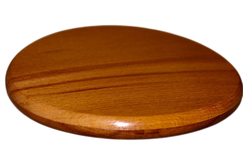
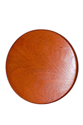
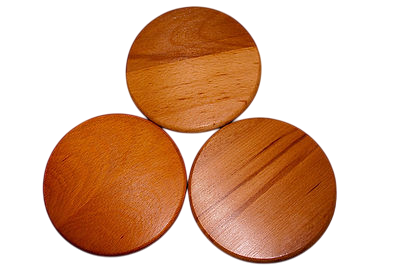

Гармонизатор «Яй-Осидо: Зеркало Жизни» (Я.С. Ибадов, В.П. Гоч)




Гармонизатор «ЯЙ-Осидо» продолжает серию гармонизаторов «Ключ Жизни». Научная основа разработки - методы Альтернативной Психологии, рунные технологии (В.П. Гоч), результаты проведенных научных исследований, полученные современными инструментальными электорофизиологическими методами (ЭКГ, ЭЭГ, ЭМГ, Фолля, ГРВ) с помощью системы «AURA_Vibralmag», диагностического комплекса «Омега-2М» и методом информационного контроля (торсионный фазовый портрет).
В работе устройства в качестве кодирующего элемента использовано особое сочетание ключей янского и иньского происхождения, которые в соединении со спиралями образуют новый символ - «символ Жизни».
На рунном языке (В.П. Гоч), позитивный Ян-ключ соответствует изображению руны «Яй», а Инь-ключ – руне «Йех». При соединении данных символов «Яй» и «Йех» получается руна «Аль-Го», ключевыми словами которой являются « защита, зеркало». Также при соединении двух «символов Жизни» образуется новый символ - «зеркало Жизни». Руне «Яй» соответствует русская буква «я», а руне «Йех» - буква «й». Буквенное сочетание «я» и «й» представляет собой азербайджанское слово «яй» – лук, на рунном языке «лук» – осидо. Таким образом сформировалось название гармонизатора «ЯЙ-Осидо», кодирующим элементом которого является «символ Жизни».
Гармонизатор оказывает преобразующее и гармонизирующее воздействие на биологические объекты и окружающее пространство. Результатом воздействия гармонизатора на объект является восстановление информационных составляющих поля объекта во времени. В основе работы гармонизатора происходит коррекция метаморфоз времени систем на многомерном уровне. Новый гармонизатор способствует адаптации человека в Новом Времени. Гармонизатор «Яй-Осидо: Зеркало Жизни» –- результат многих лет труда.В нем собрано много информации и одновременно в него вложена новая информация, которая создана для блага Человечества. Общаясь с этим гармонизатором, человек получает освобождение от негативного прошлого, так как сам гармонизатор отражает негативные информации прошлого. Одновременно, являясь местом метаморфоз Жизни, гармонизатор способствует проведению в будущее и развитию в будущем позитивных информаций.
Область применения: медицина, физика, химия, биология, экология, сельское хозяйство, пищевая промышленность и др.
Гармонизатор позволяет: - улучить микроциркуляцию крови конечностей, восстановить нарушенный лимфатический отток в органах и системах; - облегчить процесс реабилитации при хронических состояниях; - наладить работу энергетических центров (чакр) человека; - улучить обменные процессы в организме и повысить иммунитет; - нормализовать и восстанавливать функции коры нейронов головного мезга, нервно-мышечных элементов; - cнять усталость, стресс, головную боль, активизировать процессы мышления, памяти и омоложения; - cтруктурировать воду, улучшая ее физическо-химические и биологические свойства; - улучить основные функции крови: дыхательную, гомеостатическую, защитную; - восстановить работу сердечно-сосудистой системы; - осознанно влиять на информационные характеристики различных объектов и веществ; - повысить эффективность сельскохозяйственного производства.
Любой материал, из которого изготавливается гармонизатор, имеет свои качества и выбирается не случайно. Особо учитывается его воздействие на человека. Представляя собой часть дерева, буковая основа гармонизатора оказывает по подобию особое воздействие на те органы человека, которые имеют форму дерева. В физическом теле человека форму дерева имеют бронхи («бронхиальное дерево») и мозжечок – отдел головного мозга. По подобию формы (ПИД-эффект) бук оказывает гармонизирующее воздействие на эти органы. Древесина бука также оказывает гамонизирующее воздействие на равновесие стихий в организме человека. В соответствии с воззрениями китайской медицины, каждый орган человека связан с определенной стихией, и гармонизация стихий ведет к улучшению состояния организма.
В буке, как и в человеке, записана информация о времени. У дерева эта информация визуализируется и присутствует в годичных кольцах, у человека – в ДНК, биоэнергетической матрице. Когда мы взаимодействуем с гармонизатором, через биорезонанс может происходить активизация временных записей, находящихся в физическом теле человека, что способствует более полной и быстрой коррекции этих записей кодирующим элементом - «символом Жизни».
Бук принадлежит семейству дубовых и обладает подобными дубу духовными качествами. Является источником жизненной силы, защищает пространство от проникновения негативных сил. Дуб «прикрепляет» к себе несовершенства, тяжелые качества и привычки людей, дающие отсталость (отставание от времени), трансформирует их, освобождая таким образом духовную силу человека, плавно вводя её в Новое Время.
Дополнительная информация по буку. Гармонизатор изготовлен из древесины бука. При выборе материала учитывались особые свойства бука. Бук у разных народов выступает как символ величественности, процветания, чести и победы, стойкости и полноты жизненных сил. С ним связывается символика письменности, буквенного знания, литературы (русс. «буква», англо-сакс. «boc», анг. Book – «книга» и др.). Этимология слова, возможно, имеет славянские корни (Букварь).
Вместе с кипарисом и певгом бук служил материалом для постройки Иерусалимского храма. Бук живет до 500 лет, но после 80-ти лет в высоту не растет, а лишь утолщается его ствол и развивается крона. Любит свет и тепло. Буковые леса - бучины – имеют важное значение в поддержании чистоты воздуха и водных источников, в защите почв от эрозии. Таким образом, бук соединяет в себе все природные стихии и регулирует их взаимодействие.
Бук – исключительно горное растение и выполняет данную ему природой работу. В процессе фотосинтеза он преобразует солнечную энергию в биохимическую, выделяя через корни в почву различные органические и неорганические вещества, способствующие повышению ее плодородия. Бучины способствуют переводу поверхностного стока воды во внутрипочвенный (работа на фазе, на уровне метаморфоз), обеспечивают равномерное поступление осадков в реки, предохраняют естественные и искусственные водоемы от заиления. В качестве гипотезы можно предположить, что бук дает фазовую основу горной местности.
Деревянные гармонизаторы «Яй-Осидо» выполнены в трех размерах: диаметром 5, 9 и 18 см. Гармонизатор «Яй-Осидо» – 18 см удобен для структурирования воды, гармонизации сердечно-сосудистой системы, психоэмоционального состояния, при работе с позвоночником. Рекомендуется прикладывать гармонизатор к спине (на уровне нижнего края лопаток) и держать его до полного исчезновения неприятных ощущений в области позвоночного столба (30 мин. – 1 час). Гармонизатор «Яй-Осидо» – 9 см рекомендуется помещать под подушку во время сна, прикладывать к больным местам на теле, а также использовать для массажа. Гармонизатор «Яй-Осидо» – 5 см рекомендуется для коррекции состояния головного мозга (для этого следует расположить гармонизатор в области левого уха на расстоянии 2-3 см), а также для коррекции работы энергетических центров (чакр) человека.
Использование гармонизаторов не имеет противопоказаний, рекомендуется повсеместно и для всех возрастов. Для наибольшего эффекта можно проводить цикл сеансов с применением гармонизаторов в комплексе. Человек сидит в кресле, при этом гармонизатор – 18 см находится за спиной на уровне лопаток, парные гармонизаторы п 9 см располагаются на коленях, а гармонизаторы по 5 см – под ладонями (руки лежат на подлокотниках кресла). Продолжительность коррекции функционального состояния человека – около 40 минут.